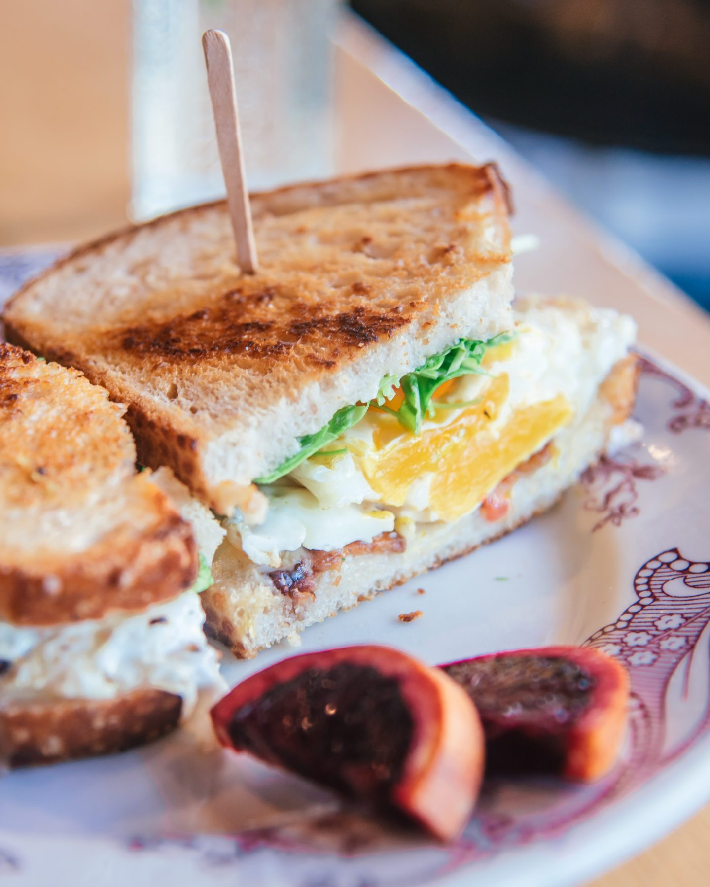

Market veggies, farm fresh eggs, cheese, herbs and cream served with a side of field-picked greens
$10.50
Hummus Toast
Six-grain bread toasted with garlic olive oil, house-made hummus, toasted pine nuts, red onion, radish, cayenne, lemon pepper and sea salt
$11.00
Sally's Waffle
Whole wheat flour, oat bran, and flax based batter topped with locally sourced seasonal fruit and real maple syrup
$15.00
San Louie Bagel
Cream cheese, SLO Grown tomatoes, cucumber, sunflower seeds, sprouts. Option: sub hummus for cream cheese
$11.00
Breakfast Tacos
Blue corn tortillas, country potatoes, black beans, pickled carrot and onion, jalapeño aioli, two sunny eggs, cilantro microgreens. Add bacon or soyrizo!
$11.25
Breakfast Burrito
Two farm eggs, country potatoes, salsa roja, black beans, queso cheese, caramelized peppers and onions. Choice of: bacon, sausage, chorizo, soyrizo, veggie or vegan
$12.25
Acai Bowl
Acai smoothie topped with house-made granola and locally sourced fruit. Vegan available
$10.00
Sandwiches

Best Bud
House roasted chicken breast with local apples, melted brie, toasted pecans, arugula, garlic aioli and whole grain mustard on whole wheat
$10.50
Killer Grilled Cheese
Fresh mozzarella, brie, raw cheddar, garlic aioli, house-made pesto on sourdough
$9.00
Buster Brown
Roasted portobello mushroom, caramelized onion, goat cheese, house-made pesto, tomato and basil on whole wheat
$10.50
Tuna Melt
House tuna salad, raw cheddar cheese, local tomato and arugula on sourdough
$10.00
Coffee and Tea
House Drip
With coffee from Cacti Roasters
$2.75
Espresso
Add an espresso shot to any drink
$3.00
Cappuccino
With almond, whole, soy, or oat milk
$4.00
Housemade Chai
With almond, whole, soy, or oat milk
$4.00
Cold Brew
Smooth cold brewed coffee from Cacti Roasters
$3.00
Sides
House-Made Granola
Served with cold or steamed milk and locally sourced fruit
$4.00
Field Greens
Local greens mixed with our house-made honey mustard dressing
$5.00
Yogurt Parfait
Straus Family yogurt, house-made granola and locally sourced seasonal fruit
$5.50
Fruit Plate
Locally sourced seasonal fruit
$5.00
Drinks and Shakes
Fresh-Squeezed OJ
Squeezed in house with locally grown oranges
$5.00
Mimosa
Fresh-squeezed OJ with LaMarca champagne
$7.00
Healing of the Nations Smoothie
Our açaí smoothie plus kefir, flax, spinach and honey topped with bee pollen
$10.00
Organic Straus Milkshake
Choose one ice cream flavor: vanilla, chocolate, mint chip or vegan coconut and any mix-ins: peanut butter, chocolate hazelnut spread, berries, orange zest, espresso or bananas